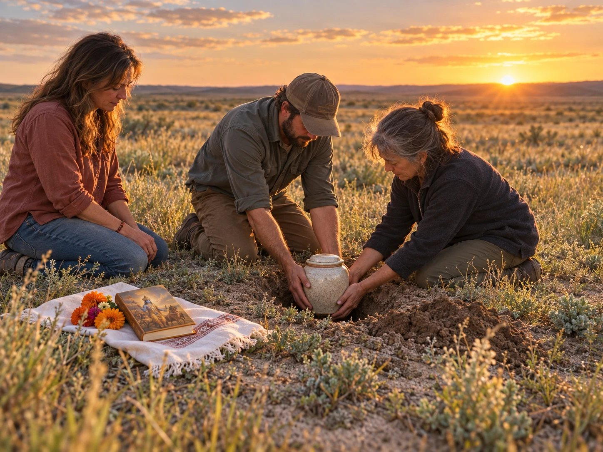

Our story
Hari Dasi's legacy

Hari Dasi was a young deer, grievously injured and missing a foot. Our neighbors came together with remarkable kindness. In her final hours, we placed a Bhagavad-gita against her body. After she died, we gave her a gentle resting place on our farm — and let new life grow in her memory.
We named her Hari Dasi on the disappearance day of Haridasa Thakura, who devoted his life to chanting the holy names of the Lord — the Sri Caitanya-caritamrta describes him chanting Krishna's names 300,000 times each day, and departing at the end of his life while chanting the name of Sri Krishna Caitanya.
We could not take away Hari Dasi's injury. But we could stay beside her, honor her life, and give her a resting place. The care our neighbors showed her inspired us to build something lasting.
GoRunGo Ranch is a memorial greenhouse in the Kiowa and Elizabeth area. Families commemorate a beloved pet or person by adding living greenery — a plant, a tree, a garden — to a sanctuary that also shelters and protects cows. A visit is a chance to remember, give thanks for a life shared, and watch something grow in their honor — and revenue helps us build the greenhouse, grow the gardens, and care for our cows. Through this place, Hari Dasi's short life can help make compassion a lasting, living part of our community.